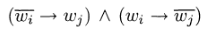
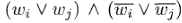
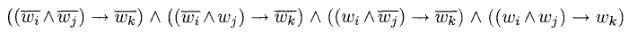
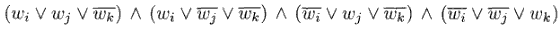
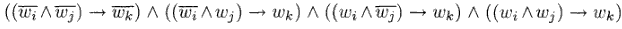
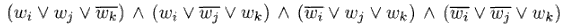

Torna alla pagina di Informatica Teorica
:: Informatica Teorica - Complessità circuitale ::
Appunti & Dimostrazioni del 26 Maggio
Funzioni booleane
Una funzione booleana f con n ingressi ed m uscite è una funzione che associa ad ogni stringa binaria di lunghezza n una stringa binaria di lunghezza m, ovvero:
f: {0,1}n -> {0,1}m
Data una funzione f che appartiene alla classe Bn (con n numero di variabili), il numero di stringhe che può avere in ingresso è 2n, mentre le diverse funzioni booleane ottenibili sono 2 elevato alla 2n.
Consideriamo ad esempio una B1:
| x
| f1
| f2
| f3
| f4
|
| 0
| 0
| 0
| 1
| 1
|
| 1
| 0
| 1
| 0
| 1
|
Come ci aspettavamo, con una variabile abbiamo 21=2 stringhe in ingresso, e 22=4 funzioni in uscita. In particolare, per quanto riguarda queste ultime:
- f1 è la funzione costante uguale a 0;
- f2 è la funzione identità;
- f3 è la funzione complemento;
- f4 è la funzione costante uguale a 1.
Consideriamo come secondo esempio una B2, per la quale ci aspetteremo di avere 22=4 possibili stringhe in ingresso, e 24=16 funzioni in uscita.
| x1
| x2
| f1
| ...
| f16
|
| 0
| 0
| 0
| ...
| 1
|
| 0
| 1
| 0
| ...
| 1
|
| 1
| 0
| 0
| ...
| 1
|
| 1
| 1
| 0
| ...
| 1
|
Per rapidità non sono stati riportati in tabella tutti i valori delle funzioni intermedie, ma è importante sottolineare che ognuna di esse è ottenibile dalla combinazione dei connettivi logici applicati alle due variabili. L'insieme dei connettivi che permettono di esprimere tutte le funzioni booleane di una classe Bn sono chiamati base per Bn, la più utilizzata delle quali è la base canonica, composta dagli operatori AND, OR e NOT.
Circuiti booleani
I circuiti booleani sono un modello di calcolo diverso rispetto a quello delle MdT, e rappresentano la controparte teorica dei circuiti digitali.
Un circuito booleano è un grafo diretto e aciclico, i cui nodi sono etichettati. Distinguiamo:
- nodi di ingresso, privi di archi entranti e etichettati con una variabile booleana o una costante (0/1);
- nodi operazione (o porte), dotati di archi entranti e uscenti, ed etichettati con il simbolo di una funzione booleana di uno o più argomenti (il loro numero dipende da quello degli archi che entrano nel nodo);
- nodi di uscita, privi di archi uscenti e con esattamente un arco entrante, sono etichettati con un diverso simbolo di variabile.
Altri due concetti importanti sono quelli di:
- fan-in, numero di archi entranti in un nodo. Il fan-in di un circuito è il numero massimo di fan-in calcolato sull'insieme dei nodi;
- fan-out, numero di archi uscenti da un nodo. Il fan-out di un circuito è il numero massimo di fan-out calcolato sull'insieme dei nodi.
Un circuito booleano C con n nodi di ingresso ed m nodi di uscita calcola la funzione f:{0,1}n->{0,1}m se, per ogni assegnamento di valori alle n variabili che etichettano i nodi di ingresso, il valore calcolato da C è uguale a f(x1,x2,...,xn).
Circuiti e linguaggi
Una volta codificati opportunamente i linguaggi in binario, il nostro obiettivo è quello di usare i circuiti booleani per verificarli. Ma i circuiti hanno un numero fisso di ingressi, mentre i linguaggi possono contenere stringhe di lunghezze diverse, quindi che si fa? Semplice: invece di usare un unico circuito per verificare l'appartenenza a un linguaggio ne useremo un'intera famiglia!
Una famiglia di circuiti C è una lista infinita di circuiti, (C0, C1, C2, ...), dove Cn ha n variabili di ingresso. Diciamo che C decide un linguaggio A su {0,1} se, per ogni stringa w, w appartiene ad A se e solo se Cn(w)=1, dove n in questo caso è la lunghezza di w.
Complessità di un circuito
Legata alla dimensione
Per arrivare a definire la size-complexity di un circuito dobbiamo prima introdurre un po' di concetti:
- la dimensione (size) di un circuito è pari al numero di porte che esso contiene;
- due circuiti si dicono equivalenti quando con le stesse variabili in ingresso producono lo stesso valore in uscita per qualsiasi assegnamento sugli ingressi;
- un circuito è di dimensione minima se non esiste un circuito equivalente con dimensione inferiore. A dirlo è semplice, a verificarlo è un guaio;
- una famiglia di circuiti è minimale se ogni circuito della sua lista ha dimensione minima;
- la size-complexity di una famiglia di circuiti (C0, C1, C2, ...) è la funzione f:N->N dove f(n) è la dimensione di Cn.
Abbiamo tutto quello che ci serve per affermare che:
La size-complexity circuitale di un linguaggio è la size-complexity della famiglia minimale di circuiti per quel linguaggio.
Legata alla profondità
Stesso discorso: arriveremo alla definizione della depth-complexity di un circuito solo dopo aver introdotto alcuni concetti basilari:
- la profondità (depth) di un circuito è pari alla lunghezza (il numero di fili) del percorso più lungo tra ingresso e uscita;
- un circuito è di profondità minima se non esiste un circuito equivalente con profondità inferiore;
- una famiglia di circuiti è minimale se ogni circuito della sua lista ha profondità minima;
- la depth-complexity di una famiglia di circuiti (C0, C1, C2, ...) è la funzione f:N->N dove f(n) è la profondità di Cn.
Abbiamo tutto quello che ci serve per affermare che:
La depth-complexity circuitale di un linguaggio è la depth-complexity della famiglia minimale di circuiti per quel linguaggio.
Teorema 1 - Relazioni tra complessità
Esiste una relazione tra la complessità circuitale e la tempo-complessità di un linguaggio. Intuitivamente siamo infatti portati a pensare che ogni linguaggio con ridotta complessità nel tempo abbia anche una piccola complessità circuitale. Per chi però non si fidasse del proprio intuito, eccoci servito il Teorema 1:
Sia t:N->N una funzione con t(n)>=n. Se A appartiente a TIME(t(n)), allora A ha una complessità circuitale pari a O(t2(n)).
La dimostrazione non è richiesta, ma è importante ricordare che oltre al teorema in sé prova anche che un circuito booleano può essere simulato da una MdT.
Teorema 2 - CIRCUIT-SAT è NP-completo
Così come per le formule booleane, anche i circuiti booleani possono essere o meno soddisfacibili; in particolare, lo sono quando una certa configurazione di valori passati agli ingressi fa sì che l'uscita del circuito sia pari a 1.
Il problema CIRCUIT-SAT si occupa di verificare se un circuito è soddisfacibile, o più formalmente:
CIRCUIT-SAT = {<C> | C è un circuito booleano soddisfacibile}
Vediamo ora il teorema:
CIRCUIT-SAT è NP-completo.
Teorema 3 - 3SAT strikes back!
Ricordiamo che i 3CNF-formula sono formule in forma normale congiuntiva con clausole composte da 3 letterali, e che una 3SAT è una 3CNF-formula soddisfacibile. Il teorema:
Dimostrazione
Che 3SAT fosse NP-completo l'avevamo già dimostrato col teorema di Cook-Levin nel capitolo sulla NP-Completezza, ma volete mettere ridimostrarlo con i circuiti booleani?
Come sappiamo, un linguaggio B è NP-completo se soddisfa due condizioni:
- B è in NP;
- ogni A in NP è tempo polinomiale riducibile a B.
La prima condizione è verificata grazie alla dimostrazione del Teorema 1, in cui si mostrava possibile l'utilizzo di una MdT n.d. per simulare un circuito.
Per la seconda condizione proveremo a ridurre il problema CIRCUIT-SAT a quello 3SAT in tempo polinomiale. Si parla perciò di una riduzione da un circuito C a una formula Φ, tale che C è soddisfacibile se e solo se Φ lo è.
Le variabili di un circuito sono gli ingressi x1,...,xl e le porte g1,...,gm, che dovranno essere rimappate nelle variabili di Φ etichettate come w1,...,wl+m.
Passiamo ora a costruire le clausole, che dovranno descrivere i tre operatori logici della forma canonica (AND, OR, NOT). Per semplicità utilizzeremo anche l'operatore implica, per il quale vale la proprietà:
(P->Q) = (~P v Q)
Sia wi l'ingresso e wj l'uscita:

che diventa:

Siano wi e wj gli ingressi e wk l'uscita:

che diventa:

Siano wi e wj gli ingressi e wk l'uscita:

che diventa:

A queste clausole ne aggiungiamo un'altra: (wm), che rappresenta il nodo di uscita del circuito C.
Quello che resta da fare è riscrivere le clausole in forma 3SAT (tre letterali per clausola). Dato che le uniche clausole a non essere in 3SAT (quelle del NOT e quella di uscita) hanno meno di 3 letterali, basterà semplicemente replicare un letterale quante volte serve per arrivare a 3, e metterlo in OR con gli altri. Ad esempio (wm) diventa:
(wm v wm v wm)
Ora che sappiamo come convertire variabili e porte logiche di un circuito in una formula 3SAT equivalente, possiamo affermare che se CIRCUIT-SAT è NP-completo (Teorema 2) allora anche 3SAT lo è, perché la riduzione da uno all'altro è tempo polinomiale nella dimensione del circuito iniziale.
Torna alla pagina di Informatica Teorica